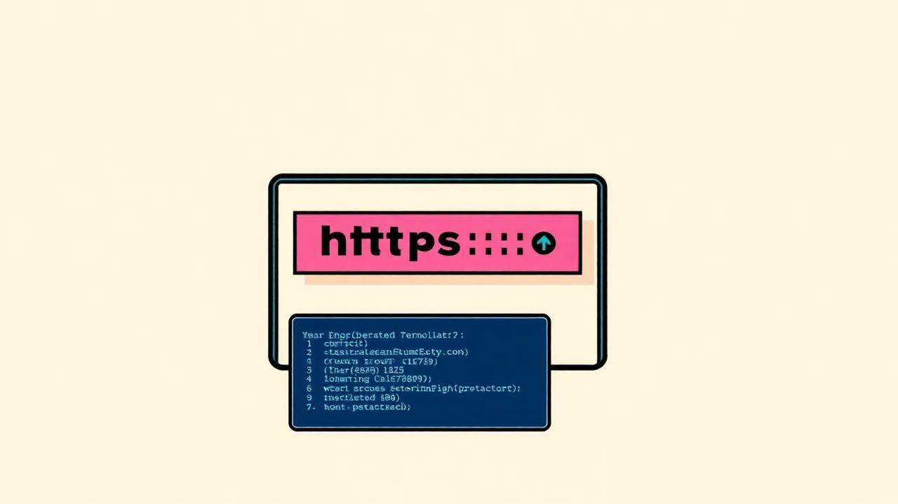
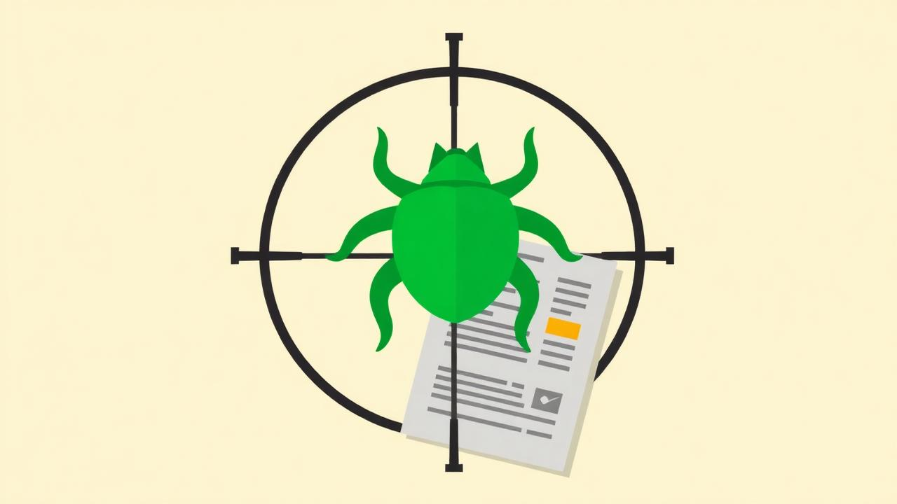

Live training Cybersecurity
Cybersecurity Foundations
Beginner → Intermediate
Start from zero and build a real working foundation in cybersecurity through live sessions, practical exercises and direct guidance.
View course →Live cybersecurity training
Practical, instructor-led cybersecurity training built around live sessions, hands-on learning and real-world security concepts.
Live classes • Real guidance • No recorded lectures
The difference
Every class is conducted live.
Students learn directly from the instructor, ask questions in real time and work through practical concepts together.
Even a one-student batch gets the live class.
Every session is taught in real time at a scheduled hour.
Ask questions mid-exercise and get answered immediately.
You practise during class, not after watching a video.
Small batches with direct access to the instructor.
Start here
Beginner → Intermediate
Start from zero and build a real working foundation in cybersecurity through live sessions, practical exercises and direct guidance.
View course →
Beginner → Advanced
Learn web application penetration testing end to end — live, hands-on, one vulnerability class at a time.
View course →
Beginner → Intermediate
Build a repeatable bug bounty workflow with live guidance from first recon to a clean report.
View course →
The instructor
I'm a security researcher who spends most of the week testing web applications and APIs, and the rest of it teaching people how to do the same thing properly.
The messy part — the question you ask mid-exercise — is what makes someone good at security.
Meet the instructor →Student notes
The live format made it much easier to ask questions and understand the practical side of cybersecurity.Aarav Sharma
I had tried recorded courses before and always stopped halfway. Having a scheduled class with someone answering me kept me going.Ishita Verma
We worked through the exercises together in the session, so I actually understood what I was doing instead of copying commands.Rohan Mehta